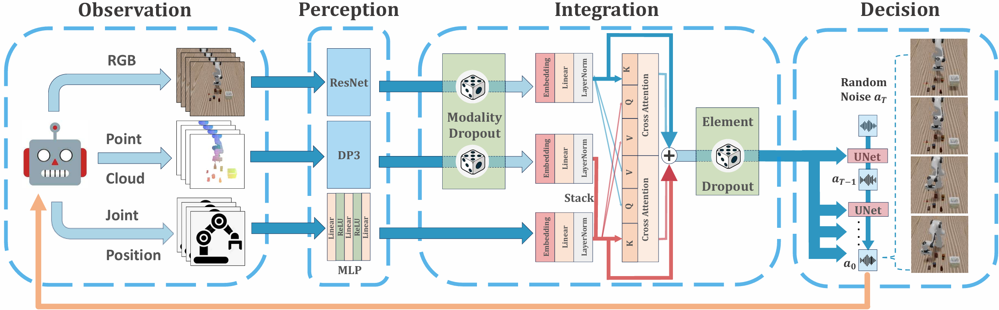
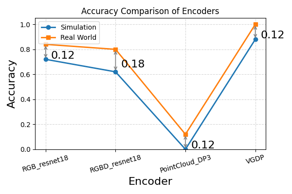

Abstract
Imitation learning has emerged as a crucial approach for acquiring visuomotor skills from demonstrations, where designing effective observation encoders is essential for policy generalization. However, existing methods often struggle to generalize under spatial and visual randomizations, instead tending to overfit. To address this challenge, we propose Visual- Geometry Diffusion Policy (VGDP), a multimodal imitation learning framework that fuses RGB images and point clouds through a cross-attention mechanism, fully leveraging 3D representations while incorporating the long-overlooked benefits of 2D visual features. Across a benchmark of 18 simulated tasks and 3 real-world tasks using 7 different observation encoders, VGDP prevails other policies with an average performance improvement of 39.1%. More importantly, VGDP demonstrates strong robustness under visual and spatial perturbations, surpassing baselines with an average improvement of 41.5% in different visual conditions and 15.2% in different spatial settings.
Key Attributes
Extensive experiments show that DIPOLE exhibits five key strengths. Aggregated across 18 simulated and 4 real-world tasks, DIPOLE outperforms all baselines by 39.1% on average. Ablation studies indicate that these gains do not stem from any individual component, but from a fusion design that systematically enforces complementarity between modalities.
Stable high performance across diverse tasks
Across our 18-task simulation benchmark DIPOLE attains a 65% mean success rate, two to six times the 11%–33% baseline range, with the lowest per-task variation.
Success rate per task (%, ↑)
Cross-task variation (CoV %, ↓ lower is more stable)
Data table
| Task — success rate (%) | DIPOLE | RGB-ResNet18 | RGBD-ResNet18 | RGBD-ViT | RGBD-MultiMAE | DP3 | PonderV2 |
|---|---|---|---|---|---|---|---|
| CloseBox | 96 | 35 | 53 | 48 | 49 | 58 | 75 |
| StackCube | 3 | 10 | 6 | 0 | 1 | 0 | 0 |
| AlphabetSoup | 79 | 22 | 24 | 61 | 48 | 0 | 0 |
| Butter | 88 | 72 | 62 | 68 | 69 | 0 | 0 |
| OrangeJuice | 53 | 17 | 18 | 31 | 33 | 7 | 8 |
| Tomato | 72 | 8 | 11 | 13 | 14 | 0 | 0 |
| Average | 65 | 27 | 29 | 32 | 33 | 11 | 14 |
| Cross-task CoV (%) | 30 | 52.8 | 48.48 | 45.49 | 43.86 | 126.19 | 133.33 |
Robustness to visual changes
Under material, table-position, and viewpoint shifts, DIPOLE outperforms six baselines spanning RGB and RGBD encoders (ResNet, ViT, MultiMAE) and point-cloud encoders (DP3, PonderV2) by 41.5% on average, with cross-randomization variance of 2.53%, roughly 11× more stable than competing encoders.
Success rate by randomization level (%, ↑)
Cross-randomization dispersion (%, ↓)
Data table
| Randomization level — success rate (%) | DIPOLE | RGB-ResNet18 | RGBD-ResNet18 | RGBD-ViT | RGBD-MultiMAE | DP3 | PonderV2 |
|---|---|---|---|---|---|---|---|
| L0 · original | 68 | 46 | 43 | 44 | 48 | 12 | 19 |
| L1 · +material & table position | 64 | 17 | 23 | 36 | 32 | 13 | 15 |
| L2 · +camera viewpoint | 64 | 19 | 21 | 20 | 20 | 8 | 8 |
| Cross-randomization dispersion (%) | 2.53 | 32.72 | 35.01 | 45.28 | 37.23 | 5.06 | 15.43 |
Spatial generalization at sub-centimeter precision
Grounded in a richer spatial representation, DIPOLE raises the success rate by 15.2% under randomized object placement and by 18.77% on tasks requiring sub-centimeter precision.
Success rate (%, ↑)
Data table
| Task — success rate (%) | DIPOLE | DP (RGB) | DP (RGBD) | DP3 |
|---|---|---|---|---|
| Fetch Bottle (randomized placement) | 22.38 | 18 | 2.10 | 1.40 |
| Insert Plug (sub-cm insertion) | 36 | 25 | 16 | 0 |
Emergent capability beyond either modality
DIPOLE attains 72.3% success on tasks where each unimodal encoder fails almost completely (≤1%).
Success rate (%, ↑)
Data table
| Task — success rate (%) | ResNet (RGB only) | DP3 (PC only) | DIPOLE |
|---|---|---|---|
| AlphabetSoup L1 | 0 | 0 | 67 |
| AlphabetSoup L2 | 0 | 0 | 73 |
| Tomato L1 | 1 | 0 | 68 |
| Tomato L2 | 1 | 0 | 81 |
| Mean | 0.5 | 0 | 72.3 |
Zero-shot transfer to unseen objects
DIPOLE generalizes to all six zero-shot transfer scenarios, spanning unseen objects, devices, and visual conditions.
Zero-shot scenarios passed (out of 6, ↑)
Data table
| Scenario | DIPOLE | DP (RGB) | DP (RGBD) | DP3 |
|---|---|---|---|---|
| Drawer | ✓ | ✓ | ✓ | ✓ |
| Bowl | ✓ | ✓ | ✗ | ✓ |
| Yogurt | ✓ | ✗ | ✗ | ✗ |
| Position | ✓ | ✓ | ✗ | ✗ |
| AirPods | ✓ | ✗ | ✓ | ✗ |
| Light Strip | ✓ | ✗ | ✗ | ✓ |
| Scenarios passed | 6/6 | 3/6 | 2/6 | 3/6 |
Methodology
DIPOLE (DIffusion POlicy with compLementarity Encoders) predicts actions from RGB and geometric observations through a pair of complementary encoders — a ResNet-18 for RGB images and a DP3-style encoder for point clouds, alongside a small MLP for proprioception. Rather than relying on a specialized fusion architecture, DIPOLE enforces complementarity through a training-time mechanism: at each training step, modality-wise dropout masks either the RGB or the point-cloud feature, forcing each modality to remain individually informative instead of collapsing onto the locally easier one. A lightweight cross-attention layer then exchanges complementary cues between the two streams, and the fused representation conditions a diffusion action head.

Experiments and Results
Insert Plug
VGDP
Diffusion Policy(RGB)
Diffusion Policy(RGBD)
DP3
Tablet in Different Position
Replaced with Airpods
Pour Cereal
Training: a consistent scene with fixed lighting and object
Transfer: various distributions of flowing rgb light strip and objects of different shapes and sizes
Pick Butter
VGDP

Pick Bottle
Generalize in training distribution
Transfer to extreme lighting shift
Simulation Tasks
We conduct our simulation benchmarks in RoboVerse, evaluating tasks from LIBERO, ManiSkill, and RLBench. All tasks are domain-randomized at three levels using a unified simulation codebase.Simulation Overview
BibTeX
@article@misc{tang2025visualgeometrydiffusionpolicyrobust,
title={Visual-Geometry Diffusion Policy: Robust Generalization via Complementarity-Aware Multimodal Fusion},
author={Yikai Tang and Haoran Geng and Sheng Zang and Pieter Abbeel and Jitendra Malik},
year={2025},
eprint={2511.22445},
archivePrefix={arXiv},
primaryClass={cs.RO},
url={https://arxiv.org/abs/2511.22445},
}